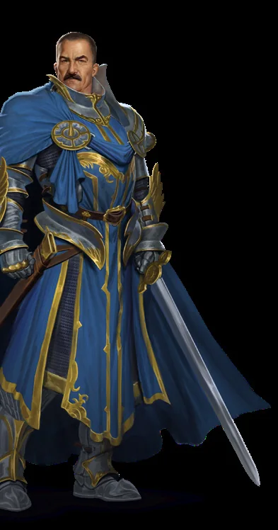
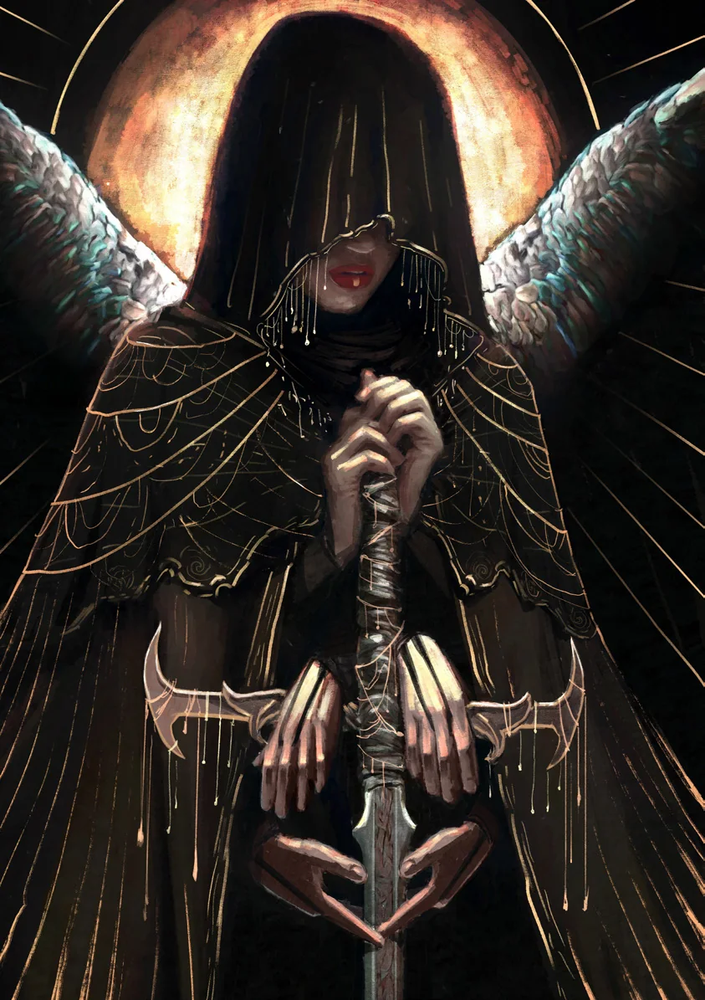

Equipamentos Diversos de Aventura
| ITEM | PROPRIEDADES | CUSTO | CUSTO |
|---|---|---|---|
| Poção de Cura | (Ação) Cure 2d4 + 4 PV. | 50 po | 50 po |
| Poção de Cura Maior | (Ação) Cure 3d6 + 6 PV. | 150 po | 150 po |
| Poção de Cura Suprema | (Ação) Cure 4d8 + 8 PV. | 450 po | 450 po |
| Tocha (conjunto de 2) | Para quando estiver escuro. 1 uso cada. | 5 pp | 5 pp |
| Lanterna e Óleo | Como uma tocha, mas menos estilosa. Recarga: 1 po. | 10 po | 10 po |
| Frasco de Piche | Pegajoso e MUITO inflamável. | 2 po | 2 po |
| Corda (15 m/50 pés) | Você sempre precisa de corda. | 10 po | 10 po |
| Corrente (3 m/10 pés) | Como uma corda, mas mais resistente e mais pesada. | 50 po | 50 po |
| Balde | Também serve como chapéu em uma emergência! | 1 po | 1 po |
| Cadeado e Chave | Tranque ou perca. | 3 po | 3 po |
| Espelho | Para medusas E dentes com espinafre. | 4 po | 4 po |
| Luneta | Arrr. | 10 po | 10 po |
| Lupa | Deixa o pequeno grande. | 5 po | 5 po |
| Giz | Não é SÓ para crianças. | 1 pp | 1 pp |
| Pá | Às vezes você precisa cavar um buraco. | 3 po | 3 po |
| Roldana | Puxe para baixo, suba. | 3 po | 3 po |
| Gancho de Escalada | Para escalar ou pescar peixes GRANDES. | 4 po | 4 po |
| Aljava e Munição | Não saia de casa sem isso. | 10 po | 10 po |
| Serra | Para cortar madeira. | 4 po | 4 po |
| Sabão | Inútil. | 1 pp | 1 pp |
| Planta Estranha | Quem sabe? | 5 pp | 5 pp |
| Objeto Brilhante | Sem valor, mas MUITO bonito. | 1 pp | 1 pp |
| Gazua | Não é minha, juro! | 5 po | 5 po |
| Sino | Para chamar o serviço. | 2 po | 2 po |
| Dados | MUITO divertidos. | 5 pp | 5 pp |
| Cobertor | Quente e macio. | 1 po | 1 po |
| Armadilha de Caça | Clac, clac... não perca um dedo! | 10 po | 10 po |
| Suprimentos de Acampamento | Saco de dormir, rações e tenda simples. | 5 po | 5 po |
| Pé de Cabra | É QUASE uma chave. | 2 po | 2 po |
| Pitões | Estacas metálicas para bloquear portas. | 5 po | 5 po |
| Algemas | Para quando alguém se comportou mal. | 3 po | 3 po |
| Saco Grande | Como um bolso GRANDE. | 5 pp | 5 pp |
| Instrumento | Tambor, trompa, lira, flauta etc. | 5-50 po | 5-50 po |
| E quanto a...? Estes não são todos os itens disponíveis para compra, apenas alguns exemplos. Se você consegue imaginar um item, provavelmente pode comprá-lo! | E quanto a...? Estes não são todos os itens disponíveis para compra, apenas alguns exemplos. Se você consegue imaginar um item, provavelmente pode comprá-lo! | E quanto a...? Estes não são todos os itens disponíveis para compra, apenas alguns exemplos. Se você consegue imaginar um item, provavelmente pode comprá-lo! | |
| Moedas. As moedas são peças de prata (pp) e peças de ouro (po). 10 pp equivalem a 1 po. Uma pp corresponde aproximadamente ao custo de uma refeição simples; uma po, ao de um banquete farto. A maioria das cidades pequenas oferece equipamentos e itens de até 50 po. Para comprar objetos mais valiosos, será preciso viajar até cidades maiores ou encontrar um mercador itinerante. | Moedas. As moedas são peças de prata (pp) e peças de ouro (po). 10 pp equivalem a 1 po. Uma pp corresponde aproximadamente ao custo de uma refeição simples; uma po, ao de um banquete farto. A maioria das cidades pequenas oferece equipamentos e itens de até 50 po. Para comprar objetos mais valiosos, será preciso viajar até cidades maiores ou encontrar um mercador itinerante. | Moedas. As moedas são peças de prata (pp) e peças de ouro (po). 10 pp equivalem a 1 po. Uma pp corresponde aproximadamente ao custo de uma refeição simples; uma po, ao de um banquete farto. A maioria das cidades pequenas oferece equipamentos e itens de até 50 po. Para comprar objetos mais valiosos, será preciso viajar até cidades maiores ou encontrar um mercador itinerante. |
Arma de Muitas Mãos
Página de ilustração.
Texto integral revisado da fonte Livro 1 · páginas 36, 37, 38
Equipamentos Essenciais
Poções de Cura
Poções de Cura são elixires vermelhos, profundos e cintilantes, com sabor refrescante e efervescente. Elas são essenciais para uma recuperação rápida, embora sua disponibilidade seja limitada. Cidades pequenas podem ter apenas algumas, enquanto cidades maiores oferecem mais - ainda assim, não em quantidade ilimitada. Pessoas ricas costumam incorporá-las a drinques elaborados em eventos sociais para exibir status.
Beber uma poção ou administrá-la a uma criatura voluntária adjacente exige 1 Ação.
Tochas e Lanternas
Heróis normalmente não enxergam no escuro. Lutar na escuridão impõe Cego. Eles podem carregar uma lanterna ou tocha para iluminar o caminho, desde que tenham uma mão livre, ou outro meio, para segurá-la. Uma tocha normalmente dura por 1 masmorra, ou por 1 nível de uma masmorra muito grande. Uma lanterna com óleo costuma durar por uma expedição inteira, até o próximo Descanso Seguro. Tochas e lanternas iluminam até 6 Espaços; além disso, há escuridão.
Disponibilidade de Equipamentos
Itens mundanos normalmente custam de algumas peças de prata a algumas peças de ouro. Se encontrar um artesão, você pode encomendar praticamente qualquer coisa que a tecnologia disponível permita criar. Quanto mais ornamentado o item, maior o preço. Uma encomenda especial normalmente começa em 50 po. Cidades pequenas possuem menos itens e artesãos que cidades grandes.
Equipamentos Diversos de Aventura
| ITEM | PROPRIEDADES | CUSTO |
|---|---|---|
| Poção de Cura | (Ação) Cure 2d4 + 4 PV. | 50 po |
| Poção de Cura Maior | (Ação) Cure 3d6 + 6 PV. | 150 po |
| Poção de Cura Suprema | (Ação) Cure 4d8 + 8 PV. | 450 po |
| Tocha (conjunto de 2) | Para quando estiver escuro. 1 uso cada. | 5 pp |
| Lanterna e Óleo | Como uma tocha, mas menos estilosa. Recarga: 1 po. | 10 po |
| Frasco de Piche | Pegajoso e MUITO inflamável. | 2 po |
| Corda (15 m/50 pés) | Você sempre precisa de corda. | 10 po |
| Corrente (3 m/10 pés) | Como uma corda, mas mais resistente e mais pesada. | 50 po |
| Balde | Também serve como chapéu em uma emergência! | 1 po |
| Cadeado e Chave | Tranque ou perca. | 3 po |
| Espelho | Para medusas E dentes com espinafre. | 4 po |
| Luneta | Arrr. | 10 po |
| Lupa | Deixa o pequeno grande. | 5 po |
| Giz | Não é SÓ para crianças. | 1 pp |
| Pá | Às vezes você precisa cavar um buraco. | 3 po |
| Roldana | Puxe para baixo, suba. | 3 po |
| Gancho de Escalada | Para escalar ou pescar peixes GRANDES. | 4 po |
| Aljava e Munição | Não saia de casa sem isso. | 10 po |
| Serra | Para cortar madeira. | 4 po |
| Sabão | Inútil. | 1 pp |
| Planta Estranha | Quem sabe? | 5 pp |
| Objeto Brilhante | Sem valor, mas MUITO bonito. | 1 pp |
| Gazua | Não é minha, juro! | 5 po |
| Sino | Para chamar o serviço. | 2 po |
| Dados | MUITO divertidos. | 5 pp |
| Cobertor | Quente e macio. | 1 po |
| Armadilha de Caça | Clac, clac... não perca um dedo! | 10 po |
| Suprimentos de Acampamento | Saco de dormir, rações e tenda simples. | 5 po |
| Pé de Cabra | É QUASE uma chave. | 2 po |
| Pitões | Estacas metálicas para bloquear portas. | 5 po |
| Algemas | Para quando alguém se comportou mal. | 3 po |
| Saco Grande | Como um bolso GRANDE. | 5 pp |
| Instrumento | Tambor, trompa, lira, flauta etc. | 5-50 po |
| E quanto a...? Estes não são todos os itens disponíveis para compra, apenas alguns exemplos. Se você consegue imaginar um item, provavelmente pode comprá-lo! | ||
| Moedas. As moedas são peças de prata (pp) e peças de ouro (po). 10 pp equivalem a 1 po. Uma pp corresponde aproximadamente ao custo de uma refeição simples; uma po, ao de um banquete farto. A maioria das cidades pequenas oferece equipamentos e itens de até 50 po. Para comprar objetos mais valiosos, será preciso viajar até cidades maiores ou encontrar um mercador itinerante. |
Arma de Muitas Mãos
Página de ilustração.